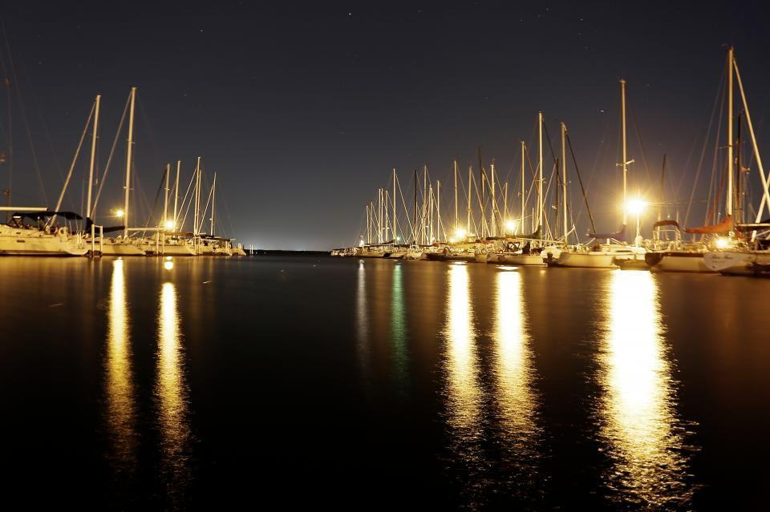
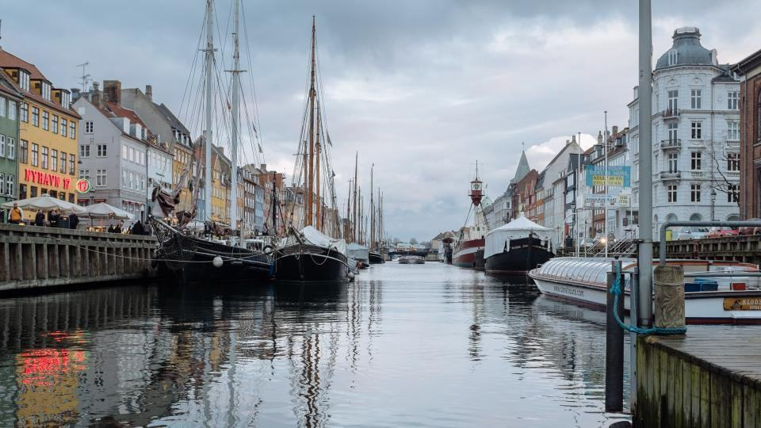

Betong som håller i hundra år
En betongponton kräver nästan inget underhåll och ger inga utsläpp av bottenfärg eller rost i vattnet. Vi gjuter med klimatförbättrad betong och bygger husen i trä, och gamla stålpråmar skrotas med full metallåtervinning.
Betong och trä
Betong som håller i hundra år
En betongponton kräver nästan inget underhåll och ger inga utsläpp av bottenfärg eller rost i vattnet. Vi gjuter med klimatförbättrad betong och bygger husen i trä, och gamla stålpråmar skrotas med full metallåtervinning.
- 100 årberäknad livslängd för våra betongpontoner
- −35 %klimatpåverkan i betongen jämfört med standard
- 100 %av skrotat stål till återvinning

Trygghet
Dykare, svetsare och kontrollansvarig
- Certifierade dykareTre dykare med certifikat enligt Arbetsmiljöverkets föreskrifter för dykeriarbete.
- EN ISO 9606-1Våra svetsare är certifierade för svetsning av konstruktions- och fartygsstål.
- Behörig kontrollansvarigSara Wennberg är certifierad kontrollansvarig enligt plan- och bygglagen.
- ID06 och kollektivavtalAll personal har ID06, och vi har kollektivavtal med Byggnads och IF Metall.

Flytbyggarna
Bygg hus som flyter
Vi söker snickare som vill arbeta på vattnet och svetsare med erfarenhet av fartygsstål. Vi har kollektivavtal och betalar dykcertifikat för den som vill utbilda sig.
Lunch på flytdockan varje fredag och en personalbastu på vattnet som vi byggde själva.